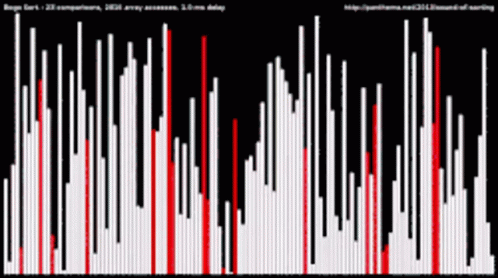

Bogosort is a sorting algorithm based on the generate and test paradigm. The function successively generates permutations of its input until it finds one that is sorted. It is not considered useful for sorting, but may be used for educational purposes, to contrast it with more efficient algorithms. Also see MiracleSort for an even more absurd algorithm!
